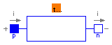

Thermal.MixedDomain.RotationalSpring

This rotational spring model takes into account the effect on the springs unstretched length due to thermal expansion. The spring is essentially a linear rotational spring just like the one provided in the Modelica.Mechanics.Rotational library except that the unstretched length of the spring is subject to thermal expansion. The sensitivity of the unstretched length to temperature is given by the 'dudT' parameter.
| Name | Default | Description |
|---|---|---|
| c | 1 | Spring constant [N.m/rad] |
| T_nom | 273.15 | Nominal temperature [K] |
| dudT | 1.0 | Angular expansion coefficient [rad/L] |
| unstretched_nom | 0.0 | Nominal unstretched length (at T_nom) [rad] |
model RotationalSpring "Temperature sensitive rotational spring"
extends Modelica.Mechanics.Rotational.Interfaces.Compliant;
parameter Real c(
final unit="N.m/rad",
final min=0) = 1 "Spring constant";
parameter Modelica.SIunits.Temperature T_nom=273.15
"Nominal temperature";
parameter Real dudT(final unit="rad/L") = 1.0
"Angular expansion coefficient";
parameter Modelica.SIunits.Angle unstretched_nom=0.0
"Nominal unstretched length (at T_nom)";
Modelica.SIunits.Angle phi_rel0(start=0)
"Unstretched spring angle";
Modelica.SIunits.Angle dphi "Delta phi";
Modelica.SIunits.Energy P;
Interfaces.Node_a node_a;
equation
dphi = (phi_rel - phi_rel0);
P = c*dphi^2;
der(P) = node_a.q;
phi_rel0 = unstretched_nom + dudT*(node_a.T - T_nom);
tau = c*dphi;
end RotationalSpring;

This heating element model allows energy in the electrical domain to manifest itself as thermal energy. The basic principle of the model is compute the power generated by the element (basic on the resistance of the element) and to transform that power (subject to an efficiency factor) into thermal energy.
| Name | Default | Description |
|---|---|---|
| R | 1 | Resistance [Ohm] |
| efficiency | .9 | Efficiency of transformation |
model HeaterElement "Heating element" extends Modelica.Electrical.Analog.Basic.Resistor; parameter Real efficiency=.9 "Efficiency of transformation"; Interfaces.Node_a thermal; equation thermal.q = -i^2*R*efficiency; end HeaterElement;
Thermal.MixedDomain.Thermocouple

This thermocouple is a model of a real-world experimental thermocouple. It assumes that the relationship between the voltage drop across the thermocouple (in the absence of any electrical current flow) and the temperature of the thermocouple is governed by the polynomial relationship: V = sum(c_i*T^i) The 'c' array is specified as a parameter of the thermocouple. Because this emperical model for thermocouple behavior is widely used, it should be possible to determine the values for the 'c' array based on the published performance characteristics of thermocouples.
| Name | Default | Description |
|---|---|---|
| C[:] | Calibration coefficients |
model Thermocouple "Experimental thermocouple"
extends Modelica.Electrical.Analog.Interfaces.OnePort;
parameter Real C[:] "Calibration coefficients";
Interfaces.Node_a node_a;
function polyval
input Real c[:];
input Real u;
output Real y;
protected
Integer n;
algorithm
n := size(c, 1);
y := 0;
for i in 1:n loop
y := y + c[i]*u^(n - i);
end for;
end polyval;
equation
v = polyval(C, node_a.T);
node_a.q = 0;
end Thermocouple;